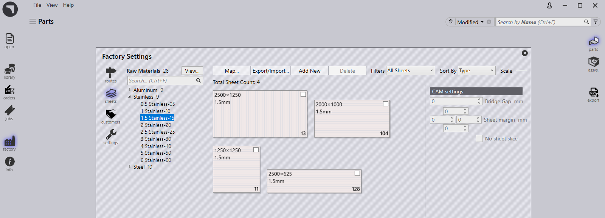
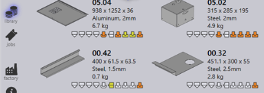
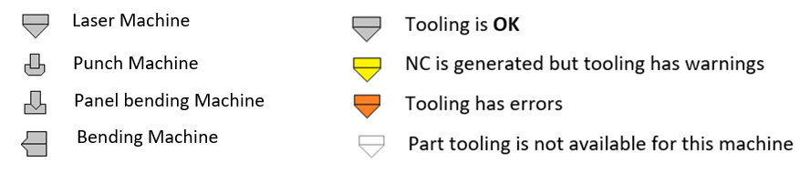
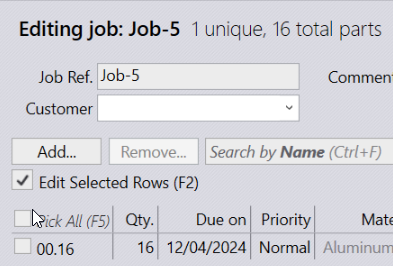
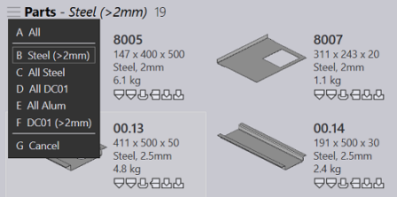
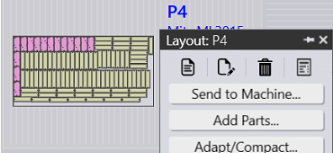

Workflow
This chapter gives you a basic overview of the work steps:
1. Setup the system
Before you start you need to configure Praxis that it is the digital representation of your factory. You need to setup machines, add material, setup tooling and configure users.

2. Import and edit parts
You import your parts into the Part Library. The technology is added to the part instantly to you parts which you can check with the icons shown below.

3. Check for production issues
You could edit all tooling with a right click on the part.

4. Define Jobs
To combine parts to production jobs, you select them in the part library and create a job. Create the Job with a right click.

5. Assign jobs to machines
If you have more than one machine then you could select the machine to produce the job.
6. Use filters to find parts
There are powerful filter algorithms for you to find any part from your customers.

7. Release part to machines
You can change any job any time before you release it to the machine. To produce your parts, you have to Assign Part to Machines, then the NC program gets transferred to the machine.

8. Produce parts
After releasing default folder location OR releasing Code Sender Location them to your machine you produce them and mark as complete.